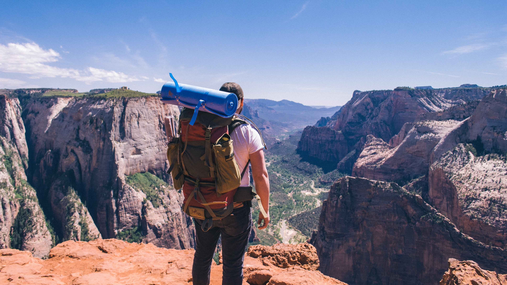
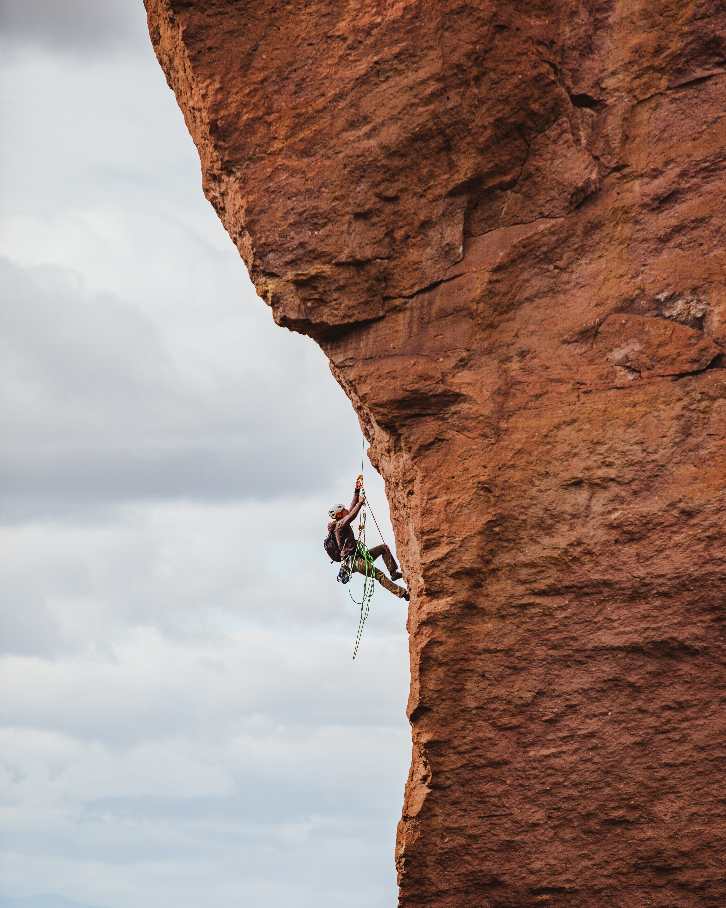

Utah is home to some of the best mountain biking in the world. Northern Utah is home to an ever expanding system of trial of trail networks that link from the Cache Valley to Central Utah. And of course the Mecca of mountain biking Moab.
Utah is home to 13 world class ski resorts. From Beaver Mountain in the north to Eagle Point and Brian Head in the south, you can find whatever suites your accomodations.
Known for its great skiing and biking, Utah is less recognized for it's incredible hiking networks. Pick one of the many mountain ranges throughout the state to enjoy sprawling vistas, high mountain lake fishing and secluded camping.
No matter what your medium is Utah has got it. If you crave the metamorphic nature of sandstone or the beauty and clean grip of granite you can find it here. Both sport and tradition climbing is available across the state as well as ice climbing during the winter months.
